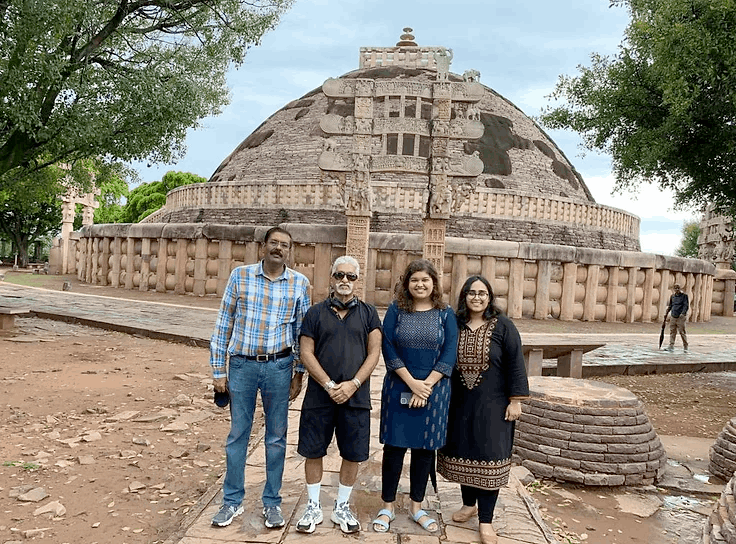
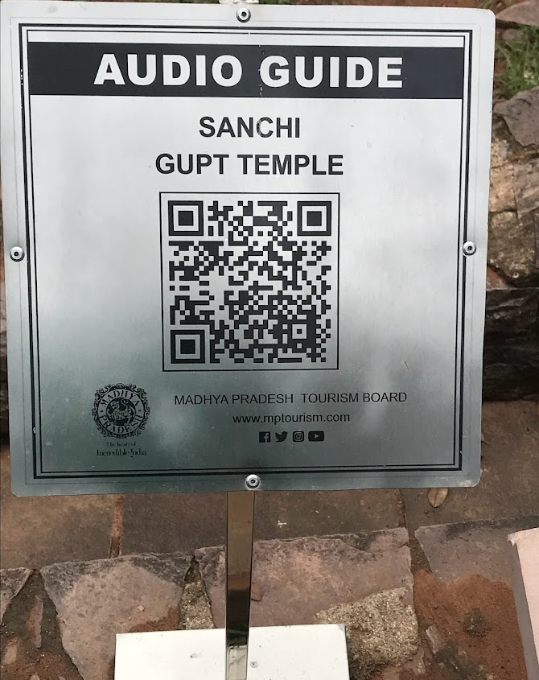
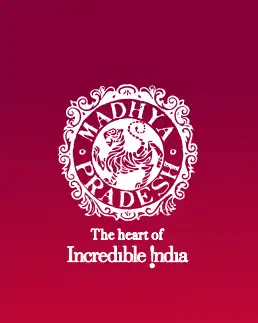

M.P. Tourism: Heritage Audio Guides
Worked as a Research Assistant on a project under M.P. Tourism, led by Mr. Joe Alvares. Helped develop and install QR-based audio guides at UNESCO World Heritage Sites including Sanchi Stupa, Bhojpur Temple, and Bhimbetka Rock Shelters.
Conducted archival research using resources from Archaeological Survey of India Bhopal Circle and Ban Ganga State Museum Library. Visited sites to collect visual material and support final placement of plaques.

Listen to the audio guides